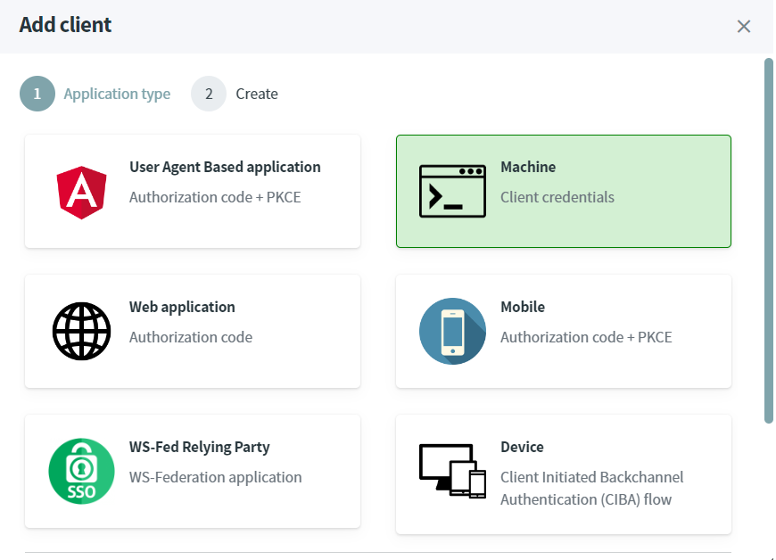
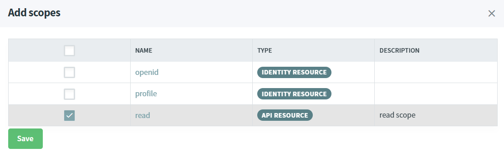

Requesting token
Warning
Before you start, Make sure you have an up and running IdentityServer and IdentityServer website.
Machine to Machine (M2M) communication
In this scenario, an application with no user interaction (e.g. windows service, console application etc...) wants to call a REST.API.
The grant-type client_credentials will be used by our Console Application who wants to call a protected REST.API.
Source Code
The source code of this project can be found here.
Add a client
- Open the IdentityServer website http://localhost:5002.
- Ensures the scope
readexists. If not, then follow the tutorial Protect REST.API using ASP.NET CORE. - Select
web applicationand click on next. - In the Clients screen, click on
Add clientbutton.

- Fill-in the form like this and click on the
Savebutton to confirm the creation. The secret must be equals topassword.

- Click on the new client, select the
Client scopestab and click on theAdd client scopebutton. - In the
Add scopespopup, select thereadscope and click on theSavebutton.

Create a console application
The last step consists to create and configure a Console Application project.
- Open a command prompt, run the following commands to create the directory structure for the solution.
mkdir RequestAccessTokenM2M
cd RequestAccessTokenM2M
mkdir src
dotnet new sln -n RequestAccessTokenM2M
- Create a console application named
ConsoleApp.
cd src
dotnet new console -n ConsoleApp
- Add the
ConsoleAppproject into your Visual Studio solution.
cd ..
dotnet sln add ./src/ConsoleApp/ConsoleApp.csproj
- Edit the
Program.csfile add copy the following code. An HTTP request is executed to get an Access Token.
using (var httpClient = new HttpClient())
{
var form = new Dictionary<string, string>
{
{ "grant_type", "client_credentials" },
{ "client_id", "m2m" },
{ "client_secret", "password" },
{ "scope", "read" }
};
var tokenResponse = httpClient.PostAsync("http://localhost:5001/token", new FormUrlEncodedContent(form)).Result;
var json = tokenResponse.Content.ReadAsStringAsync().Result;
System.Console.WriteLine(json);
}
When you run the Console Application, the Access Token will be displayed.